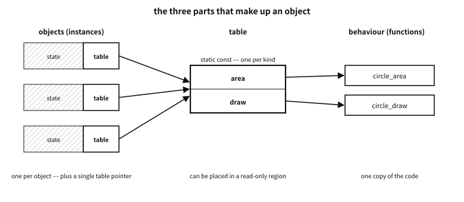

70 Object orientation in C — the craft of imitation, and its limits
What to know first
_GenericLooking back
Chapter 68 said that a pointer to a table of function pointers as the first member of a struct gives polymorphism, and that GTK built a huge object system that way. Does that mean object-oriented programming can be done in C?
A. It can be imitated. What an object-oriented language does with syntax and a compiler — encapsulation, polymorphism, inheritance, construction and destruction — is done in C by convention and by hand. The imitation is useful, and the Linux kernel, GTK and countless libraries prove it. But the imitation has clear limits. A promise the compiler does not keep is broken somewhere in the end. This chapter covers imitating well, and looking at the limits honestly.
The need for this chapter, and its context
By the end of this chapter
The questions this chapter answers
- So object orientation is slow and should not be used?
70.1 What object orientation is — first principles#
First, a word must be separated in two. In chapter 36 this book called a C object “a region of memory that holds a value”; a single int is a C object. The object of object-oriented programming (OOP) is a different word — it means a unit that bundles state with the behaviour that handles that state. In this chapter “object” has the second meaning.
Object orientation is usually explained with four words.
| Word | Meaning | What it is for |
|---|---|---|
| Encapsulation | an object’s state changes only through that object’s behaviour | the invariants are kept in one place |
| Polymorphism | the same request is answered by different behaviour for each kind of object | the caller need not know the kind |
| Inheritance | one kind takes over the state and behaviour of another | the common part is written once |
| Abstraction | the outside sees only what is done, not how | it makes places that can be changed |
Table 70.1 — Four words used to explain object orientation
The four were not a bundle from the start.
Simula 67, counted as the first object-oriented language, was made by Ole-Johan Dahl and Kristen Nygaard at the Norwegian Computing Center for simulation. Each kind of thing to simulate — ships, ports, cargo — had a “class”, and similar things inherited a class. Classes and inheritance come from this line.
The other line is Alan Kay and the Smalltalk of Xerox PARC. Kay is credited with coining the term “object-oriented”. The object he pictured was a unit like a biological cell, or a computer on a network, communicating with others only by messages. Inheritance was not at the centre of his picture — more on that at the end of the chapter.
Today “object orientation” mostly means the shape of C++, Java and C#: classes, inheritance and virtual functions. This chapter, too, is about imitating that shape in C, but it is worth keeping in mind that it is not the only shape object orientation has.
70.2 C has none of it — it is imitation#
C23 has no classes, methods, inheritance, access control, constructors or destructors. It has structs, functions, function pointers and header files. With those, the parts of an object-oriented language are imitated one by one.
| What the language does | The C imitation | Who keeps the promise |
|---|---|---|
| Encapsulation, access control | opaque types — only the declaration in the header, the definition in the .c (chapter 61) | the compiler, partly (it hides the size and the members) |
Methods and this | functions that take the object pointer as their first argument | people |
| Virtual functions, polymorphism | tables of function pointers (chapter 68) | people — the compiler does not notice a wrongly filled table |
| Inheritance | the base struct as the first member, or container_of (chapter 48) | people — nobody checks that a down-cast is right |
| Constructors | factory functions …_new, initialisation functions …_init | people — forget to call one and the object is rubbish |
| Destructors, RAII | call …_free or …_fini yourself | people — forget and it leaks |
| Namespaces | prefixes (chapter 64) | people |
| Overloading | _Generic (chapter 67), or different names | the compiler (_Generic picks the branch) |
Table 70.2 — What an object-oriented language does, and what C does by hand
Look at the right-hand column. Most of it says “people”.
70.2.1 Beware of “just do it well”#
There is a common defence of the imitation: “C can do all of it. The programmer just has to do it well.” That is half right. C can do all of it. But “just do it well” is not a design. It only writes down in advance that “when this promise breaks, it is the programmer’s fault”.
Doing by hand what a language would do means that it must be right every time: every time a table is filled, every cast, every construction and every destruction. Wrong once in a thousand times, a program with a thousand objects is always wrong. And the accidents this book showed in chapter 57 all happened in code written by people who “did it well”.
So this chapter takes this attitude: make structure, not people, keep the conventions. Opaque types make the compiler stop outside code from touching the members. Checking cast macros catch a wrong down-cast, at run time if nothing else. And whatever a tool can catch is left to the tool.
examples-en/oop/bad_call/shapes.c
/* A hand-made "method table" filled in carelessly: circle_area takes a circle,
but the table's slot expects a function taking a shape. The cast makes the compiler
quiet; calling through it is undefined behaviour (C23 6.3.2.3p8). */
#include <stdio.h>
struct shape;
struct shape_ops { double (*area)(const struct shape *); };
struct shape { const struct shape_ops *ops; };
struct circle { struct shape base; double r; };
static double circle_area(const struct circle *c) { return 3.0 * c->r * c->r; }
static const struct shape_ops circle_ops = {
/* the cast hides the mismatch */
.area = (double (*)(const struct shape *))circle_area,
};
int main(void)
{
struct circle c = { .base.ops = &circle_ops, .r = 2.0 };
struct shape *s = &c.base;
/* "works" on this machine --- and is still wrong */
printf("area = %g\n", s->ops->area(s));
return 0;
}
Output
plain build : area = 12
(gcc has no -fsanitize=function; using clang for the second build)
checked build : stopped
call to function circle_area through pointer to incorrect function type 'double (*)(const struct shape *)'
A function of a different type was pushed into a slot of the table with a cast. On this machine the “right” area comes out — which makes it more dangerous. Calling a function through a pointer of an incompatible type is undefined behaviour, or UB (undefined behaviour) (C23 6.3.2.3p8). Clang’s -fsanitize=function checks the type of the function at every indirect call and stops here. GCC has no such check.
Platform note. -fsanitize=function
A common misconception. “An object system written in C does the same as C++. It just takes more work”
dynamic_cast), and that no object skipped its constructor. In the C imitation those checks disappear, turn into run-time checks, or become the job of test tools. The accurate difference is not “more work” but “fewer warnings when you get it wrong”.70.3 Separate the three parts — state, behaviour, table#
The first principle to set when building objects in C is to keep three things apart.
| Part | Its shape in C | How many copies |
|---|---|---|
| State — member variables | the instance struct | one per object |
| Behaviour — methods | functions (static, or external with a prefix) | one copy of the code |
| Table — the virtual function table | a static const struct of function pointers only | one per kind |
Table 70.3 — The three parts that make up an object
The vtable.c of chapter 68 had this shape. The object holds only one pointer to its table.

Figure 70.1 — State per object, one table per kind, one copy of the behaviour.
There are three reasons.
- Size. Copy the function pointers into every object and an object with five methods grows by 40 bytes; a million objects is 40 MB. With the table kept apart, it is 8 bytes per object.
- Change in one place. To change a kind’s behaviour, change one table. With every object holding its own function pointers, there is no telling which objects still hold the old function.
- Security. A function pointer in writable memory is a target — let one buffer overflow onto it and the program’s flow is taken over (chapter 57). Make the table
static constand the compiler and linker can put it in a read-only region. The standard does not require that, but common implementations do it. All that stays in the object is the one pointer to the table.
The Linux kernel developer Neil Brown, describing the object-oriented patterns of the kernel, put the “pure” table of function pointers only at the base and wrote that such tables rarely contain anything other than function pointers. The exceptions are fields needed to register the implementation, such as the owning module or a name.1
70.3.1 Empty slots in the table#
Leaving a slot empty (NULL) is a common convention — “this kind does not define this behaviour of its own”. Then the caller has to check every time, as in if (ops->flush) ops->flush(obj);. Brown’s article points out the cost of this convention and says that filling in the default behaviour explicitly is often cleaner: keep a “bundle of defaults” in a macro with C99 designated initialisers, and let each kind override only the slots that differ. With no empty slots there is no check for the caller — and no accident from forgetting it.
70.4 Polymorphism — what it gives, what it costs, what to watch#
Calling a function through a table is dynamic dispatch: which function is called is decided at run time by the object’s table.
What it gives is plain.
- The caller need not know the object’s kind. Drawing code does not ask whether a shape is a circle or a rectangle.
- A new kind can be added without changing the callers’ code — a new table and a few functions are enough. Plug-in structures, file systems and device drivers stand on this property.
What it costs is just as plain.
- Indirect calls. The compiler does not know which function will be called, so it cannot expand it in place (inline it). When inlining is blocked, the optimisations that follow — constant propagation, vectorisation, removing needless work — are blocked with it. That costs more than the call itself.
- The cost of reading. Someone reading
s->ops->area(s)cannot tell what it does. They have to go and find where the table was filled. - Objects with no table. Call an object whose table pointer was never filled and the program jumps anywhere.
Where the compiler can tell which table it is, it sometimes turns an indirect call into a direct one (devirtualisation). In C there is room for that when the table is static const and the object’s table pointer is set in one place only. But do not design around it.
There are three things to watch.
- If the set of kinds is closed, no table is needed. If shapes are circles, rectangles and triangles and nothing else, a tag and a
switchare simpler and usually faster (“Where things are going now”, below). A table earns its keep when the set of kinds is open — when people outside add new kinds. - A derived kind must not break the base’s promises. Say a square “is a kind of rectangle” and inherits the rectangle’s table; if the square cannot honour the rectangle’s “change the width only”, code that accepts rectangles goes wrong when it meets a square. Barbara Liskov put this idea forward in her OOPSLA keynote of 1987; it later came to be called the Liskov substitution principle. In C it is kept only by documentation and tests.
- A table’s slots, once published, are a contract. Change the order or the arguments of the slots, and all the outside code that filled the old table goes wrong (“Structs that survive new versions”, below).
70.5 Overloading — one name, several bodies#
Two words first, because they are so often mixed up.
| Word | Meaning | When the choice is made |
|---|---|---|
| Overloading | several functions with the same name, differing in argument types | at compile time — by the types of the arguments |
| Overriding | a derived kind replaces the same behaviour of its base with its own | at run time — by the object’s table (polymorphism) |
Table 70.4 — Overloading and overriding are different things
When building objects in C, “which functions go in the table and which do not” is a question of overriding. “Should the same name have a different body for each type?” is a question of overloading. Decide the two separately.
70.5.1 Functions for the table, and functions not for it#
Put in the table only the behaviour that differs between kinds. Leave the rest as ordinary functions.
- A shape’s
areadiffers between circles and rectangles → the table. - A shape’s
move(dx, dy)is “add to the position” for every shape → an ordinary function,shape_move. shape_name, returning the object’s name, only reads a field of the base struct → an ordinary function.
Ordinary functions are called directly, inlined, and found in one step in a debugger. Put every function in the table “in case it needs changing one day”, and every call pays the costs above. C++ making functions non-virtual by default, with virtual written separately, is the same judgement.
70.5.2 Two ways to overload in C#
C cannot have two functions with the same name. There are two ways round it.
First, split the names. The standard library took this way itself — sqrtf, sqrt, sqrtl; abs, labs, llabs. The type shows in the name, so the reader knows what is called, and searching and linking are never confused.
Second, choose with _Generic (chapter 67). _Generic, added in C11, is a compile-time device that picks a branch by the type of an expression. sqrt(x) from <tgmath.h> goes to sqrtf or sqrtl by the type of x — the header has been there since C99, before _Generic, but today’s implementations usually build it with _Generic.
70.5.3 The pros and cons of _Generic, and what to watch#
_Generic is convenient, but the type it sees is sometimes not the type the programmer had in mind.
examples-en/oop/generic_pick.c
/* Overloading in C: _Generic picks a branch by the type of an expression,
at compile time. The type it sees is not always the type you had in mind. */
#include <stdint.h>
#include <stdio.h>
#define type_name(x) _Generic((x), \
char: "char", signed char: "signed char", unsigned char: "unsigned char", \
short: "short", unsigned short: "unsigned short", \
int: "int", unsigned: "unsigned", long: "long", unsigned long: "unsigned long", \
long long: "long long", unsigned long long: "unsigned long long", \
float: "float", double: "double", long double: "long double", \
char *: "char *", const char *: "const char *", int *: "int *", \
default: "(something else)")
/* a "print" overloaded by type --- each branch must still compile for every call */
static void print_int(long long v) { printf("%lld", v); }
static void print_uint(unsigned long long v) { printf("%llu", v); }
static void print_dbl(double v) { printf("%g", v); }
static void print_str(const char *s) { printf("\"%s\"", s); }
#define print(x) _Generic((x), \
int: print_int, long: print_int, long long: print_int, \
unsigned: print_uint, unsigned long: print_uint, unsigned long long: print_uint, \
float: print_dbl, double: print_dbl, \
char *: print_str, const char *: print_str)(x)
int main(void)
{
char c = 'a';
uint8_t byte = 200;
const int ci = 5;
int arr[3] = { 0 };
/* a character constant is an int in C */
printf("%-16s -> %s\n", "'a'", type_name('a'));
printf("%-16s -> %s\n", "c (a char)", type_name(c));
printf("%-16s -> %s\n", "c + 1", type_name(c + 1)); /* promoted */
printf("%-16s -> %s\n", "byte", type_name(byte)); /* uint8_t is a typedef */
printf("%-16s -> %s\n", "ci (const)", type_name(ci)); /* qualifier dropped */
printf("%-16s -> %s\n", "arr", type_name(arr)); /* the array decays */
/* char *, not const char * */
printf("%-16s -> %s\n", "\"text\"", type_name("text"));
printf("%-16s -> %s\n", "1.0f * 2", type_name(1.0f * 2));
printf("\nprint: ");
print(42); printf(", "); print(3u); printf(", ");
print(2.5); printf(", "); print("hi");
printf("\n");
/* print(c) would not compile: there is no char branch. A missing branch is an
error, which is the good news; the bad news is that `c + 1` silently goes
to the int one. */
return 0;
}
Output
'a' -> int
c (a char) -> char
c + 1 -> int
byte -> unsigned char
ci (const) -> int
arr -> int *
"text" -> char *
1.0f * 2 -> float
print: 42, 3, 2.5, "hi"
- A character constant
'a'is anintin C (unlike C++). c + 1becomesintby integer promotion (chapter 30).uint8_tis only atypedef, so on this machine it goes to theunsigned charbranch — on another implementation it could be another branch.const intgoes to theintbranch. The controlling expression undergoes lvalue conversion and loses its qualifiers.- An array decays to a pointer. A string literal is
char *, notconst char *.
And print(c) does not compile — there is no char branch. That a missing branch is an error is the good news; that c + 1 goes silently to the int branch is the bad news. The error messages point at the long expression after the macro has expanded, which is hard to read, and every branch of a _Generic has to pass syntax and type checking even when it is not chosen.
So the judgement is this: overload only when the meaning really is the same. “Square root” means the same whatever the type, so <tgmath.h> suits it. Hide something like “print”, whose format differs by type, behind one name and the reader cannot tell which format will come out. When in doubt, split the names.
70.6 Structs that survive new versions — writing the size into the struct#
Libraries get new versions, and members are added to structs. If the API is one where the caller builds the struct and passes it in, that is a problem: a program compiled against the old header passes a struct of the old size, the new library reads the new size — and reads someone else’s memory.
The Windows API deals with this by writing the struct’s size into the struct itself: the first members cbSize of WNDCLASSEX, cbSize of NONCLIENTMETRICS, lStructSize of OPENFILENAME. The caller fills that place with sizeof, and from that value the library knows “which version of the struct it was given”.
examples-en/oop/versioned.c
/* A struct that carries its own size, in the style of the Windows API (cbSize).
Version 2 of the library added a member at the end. A program compiled against
version 1 still works: the library reads only as many bytes as the caller says. */
#include <stddef.h>
#include <stdint.h>
#include <stdio.h>
#include <string.h>
/* what the version-1 header said */
struct win_opts_v1 { uint32_t size; int32_t width, height; };
/* what the version-2 header says: one member more, at the end, nothing else moved */
struct win_opts { uint32_t size; int32_t width, height; int32_t dpi; };
static_assert(offsetof(struct win_opts, height) == offsetof(struct win_opts_v1, height),
"old members must stay where they were");
/* the library (version 2) */
static bool win_open(const void *opts)
{
uint32_t size;
memcpy(&size, opts, sizeof size); /* the first member is always the size */
struct win_opts o = { .dpi = 96 }; /* defaults for whatever the caller lacks */
if (size == sizeof(struct win_opts_v1) || size == sizeof(struct win_opts))
memcpy(&o, opts, size); /* read no more than the caller has */
else {
printf(" size %u: not a version this library knows --- refused\n",
(unsigned)size);
return false;
}
printf(" size %2u: %d x %d at %d dpi\n", (unsigned)size, o.width, o.height, o.dpi);
return true;
}
int main(void)
{
puts("an old program (built with the version-1 header):");
struct win_opts_v1 old = { .size = sizeof old, .width = 640, .height = 480 };
win_open(&old);
puts("a new program:");
struct win_opts now = { .size = sizeof now, .width = 1920, .height = 1080,
.dpi = 144 };
win_open(&now);
puts("a program that forgot to fill in the size:");
struct win_opts careless = { .width = 800, .height = 600 }; /* size stays 0 */
win_open(&careless);
return 0;
}
Output
an old program (built with the version-1 header):
size 12: 640 x 480 at 96 dpi
a new program:
size 16: 1920 x 1080 at 144 dpi
a program that forgot to fill in the size:
size 0: not a version this library knows --- refused
The program compiled against the old version passes 12 bytes; the library reads only 12 and fills in the rest (dpi) with the default. The new program passes 16. The program that forgot the size passes 0 and is refused.
The price is a few bytes — and the accident of the caller forgetting to fill in the size. It is worth paying because those few bytes mean the library can move to a new version without the old programs being recompiled. That is one of the reasons programs decades old still run on today’s Windows.
70.6.1 The rules to keep#
A size field is not magic. It works only when these rules are kept.
- Add members at the end only. Insert one in the middle and the old members’ offsets move. The example’s
static_assertguards that. - Do not change the meaning of old members. Same place, same type, but a changed unit, and old programs are wrong.
- The receiver reads only what it knows, and fills the unknown tail with defaults.
- Fix the list of sizes. Do not accept any value; accept only the sizes of versions you know.
- And this approach relies on both programs laying the struct out by the same ABI (application binary interface) (chapter 61). That old and new versions of the struct put the same members at the same offsets holds when the same compiler conventions are followed.
In practice. NONCLIENTMETRICS — a program built with new headers, on an old Windows
Windows Vista added iPaddedBorderWidth at the end of NONCLIENTMETRICS. Compile with _WIN32_WINNT set to 0x0600 or more and the struct is 4 bytes bigger. Microsoft’s documentation says that if a program built that way must also run on Windows XP, 2000 or Server 2003, it should check the operating system version at run time and, on the old versions, subtract that member’s size from cbSize before the call.2
The size field protects the direction “an old program on a new library”. The other direction — a new program on an old library — is refused, because the old library does not know the new size. Knowing which direction it protects is a condition of using it.
70.6.2 Compared with the other ways#
| Way | How | When it fits |
|---|---|---|
| Public struct + size field | the caller fills in sizeof | when the caller has to build the struct (option bundles kept on the stack and the like) |
| Public struct + version field | a version number instead of the size | when changes of meaning at the same size must be told apart too |
| Opaque type + factory | the struct’s size and members are not visible outside at all | most library objects — the version problem never arises |
| Versions of a function table | the same rule for tables: add slots at the end only. Or, as COM does, let an object offer several interfaces and have the caller ask for the one it needs | when people outside fill in the table, as with plug-ins |
Table 70.5 — Ways of handling a struct that changes between versions
The third row should be the default for C libraries. If outside code does not know the struct’s size, it need not be recompiled when the size changes. A size field is the second best, for when an opaque type cannot be used — when the caller wants to avoid allocation, or the struct is a simple bundle of options.
70.7 Opaque types — C’s version of encapsulation#
Chapter 61 showed opaque pointers: the struct is only declared in the header and defined in the .c. Seen as objects, that is the strongest encapsulation C can give.
examples-en/oop/opaque/stack.h
/* stack.h --- what the user of the library sees. The struct is declared, never defined:
outside stack.c nobody knows its size or members, so nobody can depend on them. */
#ifndef PCB_STACK_H
#define PCB_STACK_H
#include <stddef.h>
typedef struct pcb_stack pcb_stack; /* incomplete type: a name, nothing more */
pcb_stack *pcb_stack_new(size_t capacity); /* the factory: the only way to get one */
void pcb_stack_free(pcb_stack *s); /* its pair: the user must call it */
bool pcb_stack_push(pcb_stack *s, int v); /* the object always comes first */
bool pcb_stack_pop(pcb_stack *s, int *out);
size_t pcb_stack_size(const pcb_stack *s); /* const: only reads */
#endif
Output
push 1: ok
push 2: ok
push 3: ok
push 4: full
size 3
pop 30
pop 20
pop 10
sizeof(pcb_stack) outside stack.c: refused by the compiler (incomplete type)
main.c can hold a pointer to pcb_stack and call the functions, and nothing more. It can neither read the members nor ask the size — as the last line shows, the compiler refuses sizeof(pcb_stack) (an incomplete type, chapter 27). So stack.c can change the members, change the size, or cut the allocation to one with a flexible array member without breaking the outside code.
There is one price — the outside does not know the size, so the outside cannot allocate. Objects are always made by the library (a factory). They cannot live on the stack or be lined up in an array. So small, numerous values (points, colours, small vectors) are not made opaque but kept as public structs. It is a choice between encapsulation and layout (chapter 51).
70.8 Names — the prefix is the namespace#
C’s external names live in one yard (chapters 63–64). When two libraries export functions with the same name, the link fails — or, worse, one of them is quietly called. What C++‘s namespace does is done in C by prefixes. This is not taste but necessity — a stack_push exported without a prefix will meet somebody else’s stack_push one day.
In an object system, prefixes go as far as showing the structure.
- Functions are
prefix_type_verb—pcb_stack_push,gtk_widget_show. - Types are
prefix_type, or camel case likeGtkWidget. - Macros and constants take an upper-case prefix,
PCB_,GTK_. - Reserved names (those beginning with an underscore and a capital, and so on) are not used (chapter 63).
The prefix table in chapter 64 showed the conventions of real libraries. One thing to add here: inside one library, keep the rule without exception. When “which behaviour of which type is this?” can be read from the name alone, the prefix does more than a namespace.
70.9 The first argument is the object — this by hand#
C++‘s obj.push(1) is pcb_stack_push(obj, 1) in C. The this that C++ hides is passed by hand as the first argument. Putting it first is a convention, but one followed by nearly every C library — the reader sees at a glance “what is this call about?”.
- Behaviour that only reads takes a
constobject.size_t pcb_stack_size(const pcb_stack *s). It corresponds to a C++constmethod, and the compiler checks the promise to only read. - Do not change the order. If some functions in a library take the object first and others last, someone will pass it in the wrong place. The standard library’s
fputs(s, f)andfprintf(f, …)are the counter-example — the stream comes last in one and first in the other. - Decide the contract for a null object.
pcb_stack_free(nullptr)does nothing (likefree) — deciding it that way keeps clean-up code simple.pcb_stack_push(nullptr, 1)breaks the contract — decide whether to check and return an error or to stop with an assertion, and write it down (chapter 37).
70.10 Lifetime — there is no RAII#
C++‘s RAII (resource acquisition is initialisation) calls an object’s destructor by itself when the object goes out of scope. Standard C has no such device. What you make, you destroy — exactly once, on every way out.
Chapter 58 showed techniques for governing lifetimes. In an object system those techniques take the shape of conventions.
| Convention | Shape | When |
|---|---|---|
| Factory and its pair | T *t_new(…) / void t_free(T *) | opaque types — the library allocates |
| Initialise and finish | bool t_init(T *, …) / void t_fini(T *) | the caller provides the place (stack, array, inside another struct) |
| Allocator as an argument | t_new(alloc, …) | made from an arena or pool and thrown away together (chapter 99) |
| Reference counting | t_ref / t_unref, freed when it reaches 0 | shared by several holders, ending who knows when |
| Two-stage release | dispose (let go of others) → finalize (destroy oneself) | when objects may hold each other and form cycles |
| The collection owns | the container makes its elements, and destroying the container destroys them | when the elements live as long as the container |
Table 70.6 — Lifetime conventions in an object system
The last row is the cheapest and the least used. Instead of governing each object’s lifetime separately, gather things with the same lifetime in one container and govern only the container. Objects made while handling one request die together when the request ends — one arena does it. Entities made during one round of a game die together when the round ends. A hundred objects, one call to destroy them.
70.10.1 Help from outside the standard#
GCC and Clang have an extension, __attribute__((cleanup(f))), that calls a function when a variable goes out of scope. GLib macros such as g_autoptr(GObject) are built on it — which is why they work only with GCC and Clang, not MSVC. On the standard side, work is under way on defer, which records what to do when a block ends, as a technical specification (ISO/IEC TS 25755) (chapter 58) — it is not in C23. Either way, they only help you not forget; who owns what is still decided by people.
70.11 The model case — GObject#
GLib’s GObject is the largest and longest-used object system built in C. Countless GTK and GNOME programs stand on it, and the same objects are called from other languages such as Python, JavaScript and Rust. Chapter 68 showed its bones; here we look at what it got right.3
| Structure | How GObject does it |
|---|---|
| State kept apart from the table | every instance struct has a GTypeInstance as its first member, whose first bytes point to the class structure. The class structure (our table) exists once per kind |
| Inheriting the table | the class structure is made once, when the first instance of the kind is created, and starts as a copy of the parent’s class structure. A derived kind overrides only the slots it changes |
| Inheriting the state | the first member of a derived instance is the parent instance |
| Construction | one g_object_new makes every kind. The reference count starts at 1 |
| Lifetime | g_object_ref and g_object_unref. When the count reaches 0, dispose and then finalize |
| Casts | checking cast macros such as VIEWER_FILE(obj) (a warning when wrong) and kind-check macros such as VIEWER_IS_FILE(obj) |
| Boilerplate | G_DECLARE_FINAL_TYPE declares those conventional macros, and G_DEFINE_TYPE makes the …_get_type function and the parent-class pointer |
Table 70.7 — The structure of GObject
What it got right matches this chapter’s principles.
- Structure keeps the conventions. Casts go through macros that check the kind at run time. A wrong cast leaves an “invalid cast from … to …” warning — though the pointer is returned as it was, so nothing stops. And in today’s GLib source the check becomes a plain cast when
G_DISABLE_CAST_CHECKSor__OPTIMIZE__is defined, that is, in an optimised build. The check is a net for test builds, not a defence for release builds. - Boilerplate is not written by hand. Two macros make the repetitive code that defines a kind. Fewer places for people to make mistakes by hand.
- Release is split into two stages.
disposelets go of what it holds of others, andfinalizedestroys its own memory. Even when two objects hold each other and form a cycle,disposecan break it. The documentation saysdisposecan be run more than once — so the convention is to write it to be safe when called twice. - There is a run-time type system. Every kind is registered with a name and a number, and the bindings of other languages read that information to handle the same objects.
The costs are plain too. Dozens of lines of boilerplate per kind, the cost of a run-time type system, and time to learn it. And GObject is for places that really need a large object system — hundreds of widget kinds, bindings to many languages, decades of compatibility. Copy GObject’s shape into a small library and you copy only its costs. What to learn from it is the principles.
The same principles are in other large C code: tables such as the Linux kernel’s file_operations, and COM. COM opens the way to an object only through interfaces — an interface is a contract made of a group of function prototypes, and when an object implements several interfaces the caller reaches the object only through a pointer to one of them.4
70.12 Macros — the useful, the cost, the ones to avoid#
Macros come with C object systems. They are useful for cutting down what is repetitive to write by hand and for bringing type checks back, and for the same reasons they are overused.
examples-en/oop/macros.c
/* Macros that help an object system, and one that hurts.
(1) container_of that refuses a pointer of the wrong type
(2) a checked down-cast in the spirit of GObject's GTK_WIDGET(x)
(3) a call-through-the-table macro that evaluates its argument twice --- and its fix */
#include <stddef.h>
#include <stdio.h>
/* (1) The comparison inside sizeof is never evaluated, but it must type-check:
comparing pointers to different types is a constraint violation, so the compiler must
say so --- and with -Werror a wrong `ptr` stops the build. */
#define container_of(ptr, type, member) \
((void)sizeof((ptr) == &((type *)nullptr)->member), \
(type *)((char *)(ptr) - offsetof(type, member)))
enum kind { KIND_CIRCLE = 0xC1, KIND_RECT = 0x4E };
struct shape;
struct shape_ops { enum kind kind; double (*area)(const struct shape *); };
struct shape { const struct shape_ops *ops; };
/* base not first: container_of still works */
struct circle { double r; struct shape base; };
static double circle_area(const struct shape *s)
{
const struct circle *c = container_of(s, const struct circle, base);
return 3.0 * c->r * c->r;
}
static const struct shape_ops circle_ops = { KIND_CIRCLE, circle_area };
static const struct shape_ops rect_ops = { KIND_RECT, nullptr };
/* (2) check the kind before trusting the cast; a wrong cast yields nullptr, not garbage.
(It names `s` three times, so it too must be given a plain variable, never s++.) */
#define AS_CIRCLE(s) ((s) && (s)->ops->kind == KIND_CIRCLE \
? container_of((s), struct circle, base) : (struct circle *)nullptr)
/* (3) looks harmless... */
#define SHAPE_AREA(s) ((s)->ops->area(s))
/* ...is safer as a function: the argument is evaluated once, and it type-checks */
static inline double shape_area(const struct shape *s) { return s->ops->area(s); }
static int evaluations;
static struct shape *next_shape(struct shape *s) { evaluations++; return s; }
int main(void)
{
struct circle c = { .r = 2.0, .base.ops = &circle_ops };
struct shape *s = &c.base;
struct shape rect = { &rect_ops }, *other = ▭
printf("container_of: back to the circle, r = %g\n",
container_of(s, struct circle, base)->r);
/* container_of(&c.r, struct circle, base) would not compile: &c.r is a double *. */
struct circle *ok = AS_CIRCLE(s), *no = AS_CIRCLE(other);
printf("AS_CIRCLE(circle) : %s\n", ok ? "a circle" : "nullptr");
printf("AS_CIRCLE(rectangle) : %s\n", no ? "a circle" : "nullptr");
evaluations = 0;
double a = SHAPE_AREA(next_shape(s));
printf("SHAPE_AREA(next_shape(s)) = %g, next_shape ran %d times\n", a, evaluations);
evaluations = 0;
a = shape_area(next_shape(s));
printf("shape_area(next_shape(s)) = %g, next_shape ran %d time\n", a, evaluations);
return 0;
}
Output
container_of: back to the circle, r = 2
AS_CIRCLE(circle) : a circle
AS_CIRCLE(rectangle) : nullptr
SHAPE_AREA(next_shape(s)) = 12, next_shape ran 2 times
shape_area(next_shape(s)) = 12, next_shape ran 1 time
70.12.1 The useful ones#
| Macro | What it does | Example |
|---|---|---|
container_of that checks the type | recovers the outer struct from a member pointer, and has the compiler complain if the pointer’s type is wrong | (1) in the example, the Linux kernel |
| Checking casts | checks the kind before a down-cast — the example gives nullptr when wrong, GObject a warning | (2) in the example, GTK_WIDGET(x) |
| Generating boilerplate | makes the repetitive code that defines a kind | G_DEFINE_TYPE |
| Bundles of defaults | gathers a table’s default slots with designated initialisers | the kernel’s …_DEFAULTS |
| Method lists with X macros | one list makes the table’s slots, the name strings and the checking code | chapter 65 |
_Generic branches | picks a function by type | <tgmath.h> |
Table 70.8 — Macros that help an object system
The example’s container_of checks the type with a comparison inside sizeof. The operand of sizeof is not evaluated, so there is no run-time cost, but it is type-checked — comparing pointers to different types is a constraint violation, so the compiler must issue a diagnostic, and with -Werror on the build stops.
70.12.2 The cost of macros#
- Error messages point at the expanded code. A type error three macros deep shows an expression nobody ever wrote.
- Debuggers do not know macros. You cannot step into a one-line macro call.
- Arguments are evaluated more than once. That is (3) in the example.
SHAPE_AREA(next_shape(s))callsnext_shapetwice — with an argument that has side effects, the result is wrong. Astatic inlinefunction doing the same evaluates its argument once, checks types and shows in the debugger. - They hide control flow. A macro with a
returnorgotoinside makes an exit that cannot be seen where it is called.
70.12.3 The ones to avoid#
Counter-example. Making a “class declaration language” out of macros
CLASS(Circle, EXTENDS(Shape),
FIELD(double, r)
METHOD(double, area)
OVERRIDE(Shape, draw))Macros like these look elegant when first written. But what they produce is not C; it is a little language belonging to those macros alone. Newcomers who know C cannot read it; editors, static analysers and debuggers cannot find the members and functions; and error messages point at hundreds of expanded lines. Names made by token pasting (##) do not turn up when searched for — a name like Circle_vtbl_area is written nowhere in the source. If you need an object-oriented language, use one. If you have chosen C, write it so that it reads as C.
As rules, there are three.
- One macro, one mechanical job. “Recover the outer struct from a member”, “make one set of boilerplate”.
- A person must be able to write the expansion by hand. Do not use a macro whose expansion you cannot explain.
- Do not erase type checks. A macro that hides a
(T *)cast quietly accepts the wrong type too. Use macros to add checks.
What a function can do, do with a function. static inline functions have been there since C99, and they replace most “small, fast macros”.
70.13 The limits of object orientation — memory and caches#
So far this has been about imitating well in C. Now for the limits of the thing imitated — object orientation itself. They come along whether you imitate it in C or write it in C++.
The basic shape of object orientation is “one object = one separately allocated struct, pointed to by a pointer”. Count what that shape leaves in memory and the cache, with the eyes of chapter 51:
- A scattered heap.
malloceach object and the objects land here and there in the heap. Walking a list of objects becomes pointer chasing. - Object headers. A table pointer, a reference count, a kind number — the header attached to each object is sometimes bigger than the real data. Make a point (8 bytes) into an object and a header of that size comes with it.
- An array of objects is AoS. An object keeps its own state together — a layout that hurts work sweeping one field of many objects.
- Indirect calls and the inlining wall. The “Polymorphism” section above.
The same job measured in three shapes — the total area of a million shapes, ① with objects and tables ② with an array of tagged structs and a switch ③ with one array per kind:
examples-en/oop/dispatch/dispatch.c
/* The total area of a million shapes, computed three ways.
(1) objects: each shape allocated on its own, called through its method table
(2) tagged structs in one array, a switch on the tag
(3) one array per kind of shape, a plain loop per array
★ This program measures time and prints ratios only. */
#include <stdint.h>
#include <stdio.h>
#include <stdlib.h>
#include <time.h>
#define N (1u << 20)
#define ROUNDS 5
/* (1) the object way */
struct shape;
struct shape_ops { double (*area)(const struct shape *); };
struct shape { const struct shape_ops *ops; };
struct circle { struct shape base; double r; };
struct rect { struct shape base; double w, h; };
static double circle_area(const struct shape *s)
{ const struct circle *c = (const struct circle *)s; return 3.14159 * c->r * c->r; }
static double rect_area(const struct shape *s)
{ const struct rect *r = (const struct rect *)s; return r->w * r->h; }
static const struct shape_ops circle_ops = { circle_area }, rect_ops = { rect_area };
/* (2) the tagged way */
enum kind { CIRCLE, RECT };
struct tagged { enum kind kind; double a, b; };
/* (3) the per-kind way */
static double *radius, *width, *height;
static uint32_t n_circles, n_rects;
static struct shape **objs;
static struct tagged *tags;
static volatile double sink;
static double now(void) { return (double)clock() / CLOCKS_PER_SEC; }
static double by_table(void)
{
double t = now(), s = 0;
for (uint32_t i = 0; i < N; i++) s += objs[i]->ops->area(objs[i]);
sink = s; return now() - t;
}
static double by_switch(void)
{
double t = now(), s = 0;
for (uint32_t i = 0; i < N; i++)
switch (tags[i].kind) {
case CIRCLE: s += 3.14159 * tags[i].a * tags[i].a; break;
case RECT: s += tags[i].a * tags[i].b; break;
}
sink = s; return now() - t;
}
static double by_kind(void)
{
double t = now(), s = 0;
for (uint32_t i = 0; i < n_circles; i++) s += 3.14159 * radius[i] * radius[i];
for (uint32_t i = 0; i < n_rects; i++) s += width[i] * height[i];
sink = s; return now() - t;
}
static int cmp(const void *a, const void *b)
{ double x = *(const double *)a, y = *(const double *)b; return (x > y) - (x < y); }
static double median(double (*job)(void))
{
double r[ROUNDS];
job();
for (int i = 0; i < ROUNDS; i++) r[i] = job();
qsort(r, ROUNDS, sizeof *r, cmp);
return r[ROUNDS / 2];
}
int main(void)
{
objs = malloc(N * sizeof *objs); tags = malloc(N * sizeof *tags);
radius = malloc(N * sizeof *radius);
width = malloc(N * sizeof *width);
height = malloc(N * sizeof *height);
if (!objs || !tags || !radius || !width || !height)
{ puts("out of memory"); return 1; }
uint64_t rng = 0x9E3779B97F4A7C15u;
for (uint32_t i = 0; i < N; i++) {
rng ^= rng << 13; rng ^= rng >> 7; rng ^= rng << 17;
double x = (double)(i % 100) / 10.0;
if (rng >> 63) { /* kinds come in random order */
struct circle *c = malloc(sizeof *c);
if (!c) { puts("out of memory"); return 1; }
*c = (struct circle){ { &circle_ops }, x };
objs[i] = &c->base;
tags[i] = (struct tagged){ CIRCLE, x, 0 };
radius[n_circles++] = x;
} else {
struct rect *r = malloc(sizeof *r);
if (!r) { puts("out of memory"); return 1; }
*r = (struct rect){ { &rect_ops }, x, 2 };
objs[i] = &r->base;
tags[i] = (struct tagged){ RECT, x, 2 };
width[n_rects] = x; height[n_rects++] = 2;
}
}
double t = median(by_table), s = median(by_switch), k = median(by_kind);
printf("%u shapes, circles and rectangles in random order\n", N);
if (k > 0) {
printf(" method table : %5.1f times as long as per-kind arrays\n", t / k);
printf(" tag + switch : %5.1f times as long as per-kind arrays\n", s / k);
} else puts(" the clock is too coarse on this machine to tell them apart");
for (uint32_t i = 0; i < N; i++) free(objs[i]);
free(objs); free(tags); free(radius); free(width); free(height);
return 0;
}
Output
== -O0
1048576 shapes, circles and rectangles in random order
method table : 4.0 times as long as per-kind arrays
tag + switch : 2.9 times as long as per-kind arrays
== -O2
1048576 shapes, circles and rectangles in random order
method table : 6.1 times as long as per-kind arrays
tag + switch : 3.6 times as long as per-kind arrays
Platform note. The machine and the conditions
-O2, was about 6 times the per-kind arrays for the table and about 3.5 times for the switch. Other machines and other data give other numbers.The result has to be read honestly. ① is slow not only “because virtual calls are slow”. The objects are allocated separately and pointers have to be followed; the kinds are mixed at random, so the indirect branch is often mispredicted; and the compiler cannot unroll or vectorise the loop body. ② is slowed by the same random branching. ③ does the same operation per kind on dense arrays, with no branches and no indirect calls. There are several causes, and all of them come from the shape “one object at a time”.
Q. So object orientation is slow and should not be used?
A. No. The difference matters in hot loops that do the same job to a great many objects — updating entities in a game, physics, bulk data processing. In code handling ten windows, one configuration file or a few hundred connections, the cost of a table call cannot even be seen. There, what object orientation gives — ease of change, ease of adding kinds — is worth far more. The problem is making everything the same shape. In 2023 Casey Muratori published a similar comparison in an article and video called “”Clean“ Code, Horrible Performance”, and it caused a debate. This book does not repeat his numbers — it measured for itself, as above, and the conclusion holds only with a “where” attached.
70.14 The limits of object orientation — flow#
Object orientation has another cost: it makes the flow of a program harder to read.
- The yo-yo problem. With deep inheritance, finding out what one method does means going up and down between derived and base — here the derived one, there the base one, and inside that a call to the derived override again. Taenzer, Ganti and Podar gave the phenomenon its name in 1989.
- The fragile base class. Only the inside of the base was changed, and the derived kind breaks, because it was relying on the base’s implementation (such as which of the base’s methods calls which). Inheritance hands down implementation, so the heir is tied to the insides of what it inherited.
- Inverted flow. In a system built from callbacks and overrides, “who calls me, and when?” cannot be known from my own code. The framework calls. The flow shows only when followed in a debugger.
- Hidden state. Objects hide their state. That is how they keep invariants, but why the same method called twice gives different results cannot be seen from outside. It makes testing hard, and harder still when several threads touch it.
Many of these problems come from inheritance. So Design Patterns (Gamma, Helm, Johnson and Vlissides, 1994) set down the principle “favour object composition over class inheritance”. Composition holds another object as a member and uses only its public behaviour — it is not tied to the insides. The same goes for the C imitation: “composition”, holding the parts needed as members and calling their functions, is usually simpler than “inheritance” by making the base struct the first member.
70.15 Where things are going now — not a cure-all#
In the 1990s object orientation was taken as the right answer in programming. Today’s languages treat it as one tool among others.
| Language | What it chose | How it differs from object orientation |
|---|---|---|
| Go | interfaces. A type that has the methods satisfies the interface without declaring it | no class inheritance; composition (embedding structs) instead |
| Rust | traits. Used through generics they are chosen at compile time (static dispatch); used as dyn they go through a table | no inheritance; the programmer chooses static or dynamic dispatch |
| Rust, Swift | sum types (enum) and match — a closed set of kinds told apart by tag, with missing branches caught by the compiler | kinds are told apart by data, not by tables |
| Java 21 | sealed types and pattern matching for switch (JEP 441). The compiler judges whether every sealed kind is handled | even the home of object orientation has taken in the closed-set path |
Table 70.9 — The paths modern languages have taken
70.15.1 The expression problem — what changes more often?#
There is a named criterion for choosing between the two. It is what Philip Wadler called “the expression problem” in 1998 — with data defined by cases, can new cases and new functions be added without recompiling existing code, while keeping static type safety?5
- Objects and tables (polymorphism) make adding a new case (a new kind of shape) easy — one new table. But adding a new operation (“perimeter” for every shape) means changing every kind.
- Tags and
switch(sum types) make adding a new operation easy — one newswitchfunction. But adding a new case means changing everyswitch.
So the question is not “which is more object-oriented?” but “what gets added more often in this program?”.
70.15.2 C’s enum-match#
C has an imitation of sum types too — tagged unions (chapter 49) and switch. And C compilers catch missing branches as well.
examples-en/oop/enum_match/area.c
/* The closed-set alternative to a method table: a tag, a union, and a switch.
No default label, on purpose: then the compiler can tell us when a new kind
of shape has been added and this function was not taught about it. */
#include <stdio.h>
enum shape_kind {
SHAPE_CIRCLE,
SHAPE_RECT,
#ifdef ADD_TRIANGLE
SHAPE_TRIANGLE, /* the new kind, added later */
#endif
};
struct shape {
enum shape_kind kind;
union {
struct { double r; } circle;
struct { double w, h; } rect;
#ifdef ADD_TRIANGLE
struct { double base, height; } triangle;
#endif
};
};
static double area(const struct shape *s)
{
switch (s->kind) {
case SHAPE_CIRCLE: return 3.0 * s->circle.r * s->circle.r;
case SHAPE_RECT: return s->rect.w * s->rect.h;
}
return 0.0; /* not reached for a valid kind */
}
int main(void)
{
struct shape a[] = {
{ .kind = SHAPE_CIRCLE, .circle = { 1.0 } },
{ .kind = SHAPE_RECT, .rect = { 2.0, 3.0 } },
};
double total = 0;
for (size_t i = 0; i < sizeof a / sizeof a[0]; i++) total += area(&a[i]);
printf("total area %g\n", total);
return 0;
}
Output
two kinds : total area 9
three kinds : the build stops ---
enumeration value ‘SHAPE_TRIANGLE’ not handled in switch [-Werror=switch]
The trick is to give the switch no default. Then, when a new value (the triangle) is added to the enum, -Wswitch, part of -Wall, says “this switch does not handle the triangle”. Add a default and the compiler reads it as “the rest is handled here” and says nothing. It is not as strict as Rust’s match — it cannot stop an out-of-range integer getting into the tag — but for a closed set of kinds it is well worth using.
70.16 Do not be carried away#
Object orientation is a tool. Get carried away by a tool and problems start to look like the tool — to someone holding a hammer, everything looks like a nail. Make everything an object, every relation inheritance and every function a table, and every line of code pays the limits above.
| Situation | The tool that fits |
|---|---|
| The set of kinds is open — people outside add new kinds (plug-ins, drivers) | tables of function pointers (polymorphism) |
| The set of kinds is closed — a few and no more | tagged union + switch (enum-match) |
| The same operation on a great many elements | arrays per kind, SoA (chapter 51) |
| Library objects published to the outside | opaque type + factory + prefix |
| Option bundles built by the caller | public struct + size field (or version number) |
| Wanting to share a common part | composition first; inheritance (embedding the first member) after |
| Functions with the same meaning for different types | split names, or _Generic |
| Small, numerous values (points, colours, times) | just a struct. Do not make them objects |
Table 70.10 — What to use — a decision table
The last row deserves stress. A C struct is an excellent tool in its own right. Not every struct needs to be an object.
70.17 Back to the beginning#
At the start of the chapter Alan Kay’s picture was put aside. In 2003, when a reader asked him what object orientation is, Kay answered by e-mail:
“OOP to me means only messaging, local retention and protection and hiding of state-process, and extreme late-binding of all things.”6
In the same message he wrote that he had left inheritance out as a built-in feature “until I understood it better”. The object he first pictured was not a class hierarchy but something like a biological cell, wrapped in a membrane, hiding its inside and communicating with the outside only by messages.
Look at this chapter again with that picture and something interesting appears. A C opaque type and its set of functions have no classes and no inheritance — yet they hide their inside (not even the size can be seen), communicate only through fixed functions, and spare the outside a recompile when the version changes (late binding). The plainest of the imitations is the closest to the first idea of object orientation.
The heart of object orientation is not syntax but boundaries: what to keep inside and what to offer outside, and what promise to make across the boundary. That question can be asked perfectly well in C. And when it is asked in C, making structure keep the boundary is part of the programmer’s job.
70.18 Summary#
| Topic | The point |
|---|---|
| First principles | a bundle of state and behaviour. Two lines: Simula’s classes and inheritance, and Smalltalk’s messages |
| Imitation and its limits | most parts are kept by people. Instead of “just do it well”, let structure and tools keep them |
| Three parts | state per object, one copy of the behaviour, one table per kind (static const) |
| Polymorphism | earns its keep with an open set of kinds. The inlining wall, the cost of reading. For closed sets, switch |
| Overloading | not the same as overriding. Only behaviour that differs goes in the table. Bodies per type: split names or _Generic — only for the same meaning |
| Versions | a size field works when members are added only at the end and meanings do not change. The default is an opaque type |
| Names and the first argument | prefixes are a necessity. The object comes first; const if it only reads |
| Lifetime | no RAII. Paired creation and release, reference counts, two-stage release, the container owns |
| GObject | conventions kept by macros and run-time checks. Learn the principles; pay the costs only where needed |
| Macros | one mechanical job, an expansion writable by hand, adding checks. No little languages |
| Limits | a scattered heap, object headers, AoS, indirect calls. The yo-yo problem, fragile bases, inverted flow — composition first |
| Where things are going | interfaces, traits, sum types and match. Choose by what gets added more often (the expression problem) |
| Back to the beginning | messages, hiding, late binding — the heart is not syntax but boundaries |
Table 70.11 — Object orientation in C — one line each
70.19 Closing Part X#
The part on putting programs together and joining them up is over. Starting from the three faces of main (chapter 59), we joined several files by linking (chapter 60), saw what conventions those joins are at machine level (chapter 61), learnt where names live and how they collide (chapters 62–64), passed through the preprocessor (chapter 65), the machinery of calls (chapters 66–67) and function pointers (chapter 68), and closed with reading declarations (chapter 69) and the object as a boundary (this chapter). One theme runs through the twelve chapters: a large program is made of small pieces and the promises between them, and C leaves most of those promises to the programmer.
The next part reads the largest bundle of those promises — the standard library. Its first chapter lays out the terrain: what toolboxes there are, and why this library looks so thin and so old.
Notes
- N. Brown, “Object-oriented design patterns in the kernel, part 1”, LWN.net, 2011-06-01. ↩
- Microsoft Learn, “NONCLIENTMETRICSW structure (winuser.h)”, Remarks. ↩
- GObject documentation, “Type system concepts” (docs.gtk.org/gobject/concepts.html). ↩
- Microsoft Learn, “COM Objects and Interfaces” and “Interfaces and Interface Implementations”. ↩
- P. Wadler, “The Expression Problem”, 1998-11-12 (e-mail; homepages.inf.ed.ac.uk/wadler). ↩
- A. Kay, e-mail to Stefan Ram, 2003-07-23 (userpage.fu-berlin.de/~ram/pub/pub_jf47ht81Ht/doc_kay_oop_en). ↩